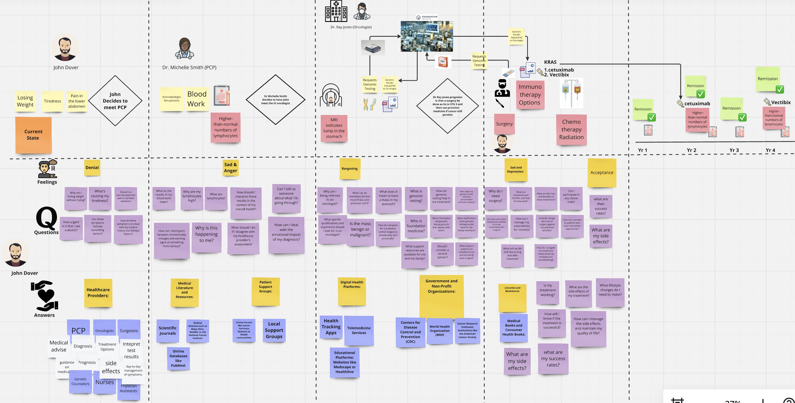

Because No One Fights Alone
At Onco-Ally, we believe that no one should face cancer alone. Our journey began with a single conviction: cancer care must go beyond clinical treatments to address every facet of a patient's life. Too often, individuals are overwhelmed by fragmented systems, complex regimens, and a lack of real-time support. We knew there had to be a better way.
Born out of MIT's rigorous academic environment, Onco-Ally is a convergence of systems engineering, machine learning research, and deep human empathy. Every feature, every decision, every line of code is guided by one question: does this help a patient or provider?
Leveraging cutting-edge technology to redefine oncology care.
Making personalized care available to everyone, everywhere.
Putting empathy at the forefront of every decision.
Building trust with transparent, data-driven solutions.
We are on a mission to ensure that no one fights alone. By uniting advanced AI analytics, wearable technology, and strategic partnerships, we are closing the gaps in remote care and empowering providers with real-time insights. Our vision is a future where every patient receives personalized, compassionate care — and every provider has the tools to deliver it. Together, we build a unified network that transforms cancer care worldwide.

In a bold move led by MIT professionals, Onco-Ally has reimagined the patient journey. Our innovative approach streamlines the entire treatment experience — from diagnosis through follow-up — delivering real-time insights and personalized care.
A Bold Move from MIT Professionals to Solve a Critical Problem in Cancer Care.